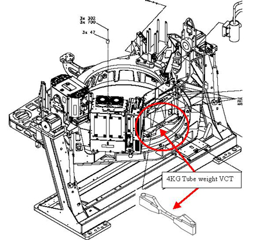
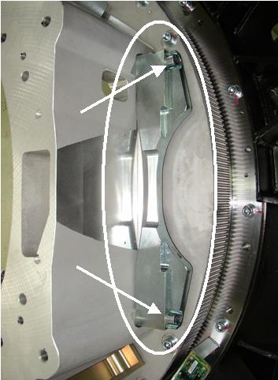
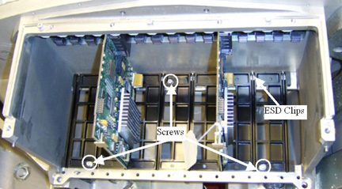
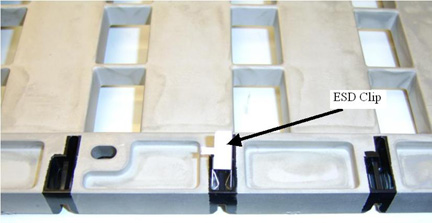
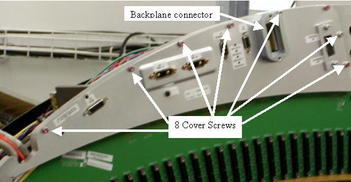
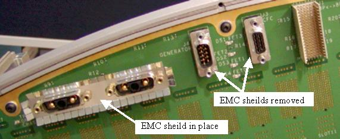
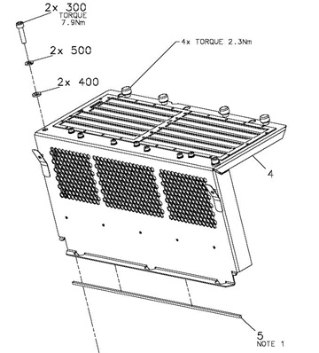

Operating Documentation
Direction 5193574-800, Rev# 22
LightSpeed 7.X Service Methods
Module Version 2.0, Version Date 4/21/09
Operating Documentation |
| Required Persons | Preliminary Reqs | Procedure | Finalization |
|---|---|---|---|
| 2 | NA | 16 hours | 4.5 hours |
This detector change procedure points to other replacement procedures. To open each in a separate window use the mouse right button to open each link in a new window. This procedure shows the complete process flow but not all the detailed instructions for every piece. The pdf file attached below is a checklist summary that can be printed and used as a guide to make sure all parts are done.
Media File 1: Summary checklist guide

| Last Revised: | February 23, 2009 |
| Item | Qty | Effectivity | Part# | Manufacturer | |
|---|---|---|---|---|---|
| Large Torque wrench for gantry balance - Order from Tool Depot | 1 | - | 46-268521G1 | - | |
| VCT chain hoist - order from Tool Depot (Chain hoist with roller arm/hook instead of 2 hooks will not work) | 1 | - | 5149069 | - | |
| 12mm long hex driver | 1 | - | supplied with system | - | |
| VCT lift arm assembly | 1 set | - | supplied with system | - | |
| Detector lift hook assembly (Supplied with Detector FRU) | 1 | - | 5142366 | - | |
| Detector alignment pin protector (nylon nose cones) | 2 | - | supplied with system and with Detector FRU | - | |
| FE Toolkit, 19mm socket, 2.5mm and 4mm hex drive bits | 1 | - | - | - | |
| Torque Driver from FE Torque wrench set | - | - | - | ||
| 10mm hex bit socket drive - supplied with system | 1 | - | - | - | |
| Item | Qty | Effectivity | Part# | Manufacturer |
|---|---|---|---|---|
| Tie-wraps | AR | - | - | - |
| Item | Qty | Effectivity | Part# | Manufacturer | |
|---|---|---|---|---|---|
| DAS kit (#5179760) | 1 | - | - | - | |
| HALO Detector FRU (#5175283) | 1 | - | - | - | |
| Plenum Upgrade Kit (if required, see instructions, #5169770) | - | - | - | ||
| ||||
| Follow ALL required safety and PPE procedures customary for your organization, when working on this product. | ||||
| Condition | Reference | Effectivity |
|---|---|---|
Only trained service personnel should service the GE CT Scanner. | - | - |
Ensure that the software revision 06MW29.7 or later software revision is on site in order to support an HDAS DAStype. If system has software older than the 06MW29.7 (July 2006), then software revision 06MW29.7 or later must be loaded to support this detector change. | - | - |
If you do not already have the 2006 style plenum then you will need to replace the entire plenum assembly with the plenum upgrade kit part # 5169770. | - | - |
Perform a DAStools Auto test and note any failures prior to performing upgrade. If the same failures are seen after the upgrade this will help with troubleshooting since all DAS/Detector electronics are being replaced with this procedure. The software LFC will wipe out results so take appropriate steps to note down results or transfer results file off the system for reference later.
Make sure a current Save State data set exists. Create one if necessary.
Remove all power from the system using standard LOTO procedures.
The plenum will be replaced in this procedure unless you already have the new 2006 style plenum. See Illustration 1 to identify the plenum required with a HALO detector. The visual difference identifying the new style plenum is the grey sub-D cabling. The older plenum has white plastic (molex) connectors.
Illustration 1: 2006 Style Plenum

Remove all gantry covers.
Refer to Parts Replacement → Gantry → Enclosure → (Cover Removal Procedure).
The tube is being removed to have access to a 4kg fixed weight behind the tube. This weight was used to counter balance the Sherlock detector but is no longer needed with the lighter HALO detector.
Use the Tube Replacement Procedure, to remove the tube. Note: the tube will be reinstalled after removing the 4kg weight.
Remove the 4kg fixed weight from the rotating frame behind the tube. See Illustration 2 and Illustration 3. Discard the 2 screws and weight. This balance weight is not needed with a HALO detector.
Illustration 2: 4kg weight location

Illustration 3: 4kg Weight Screws

Mechanically reinstall the tube using the Tube replacement instructions from step 1 above. ONLY perform mechanical installation at this time. Tube alignments will be performed after all hardware has been changed.
Power on the system and perform a DDC stationary air scan to ensure basic functionality prior to continuing. This will aid in troubleshooting any issues later after replacing the DAS/Detector hardware to know that the tube was functional. Suggest reviewing the scan data with Scan analysis MSD plots to make sure there are no beam blockages.
Remove all power from the system using standard LOTO procedures before continuing to replace the DAS/Detector subsystem.
Replace the DIFB chassis bottom card guides and DIFB's with the HALO specific DIFB boards and guides.
Disconnect the fiber optic cables from the DCB on the front of the DAS.
Remove the DIFB chassis covers and discard them. See Illustration 4 for screw locations and cover release pins.
Grab the cover on both sides using your thumbs to press in on the cover pin release tabs and lift the cover straight up and off the chassis. The tabs push a spring-loaded pin in the chassis frame. The cover is kept in line with the chassis by side channels in the chassis.
Illustration 4: DCB/DIFB chassis cover

Remove the 29 DIFB boards and put them in the supplied anti-static bags. Set them aside to return with the old detector.
Remove the DCB and place in an anti-static bag. This board will be re-installed in the system.
Remove the DIFB bottom card guides from both DIFB chassis by removing the three screws in each. Be careful to catch the screws and washers during removal. If dropped, they must be found and removed from the DIFB plenum during detector and backplane replacement. See Illustration 5 for screw locations. Card guides are replaced due to air flow design change required for HALO components.
Illustration 5: HALO DIFB Card Guides

Carefully install the Card guide ESD clips on the bottom side of the card guides. See Illustration 6 for reference. There are 8 clips per chassis card guide (16 total). When fully installed the ESD clip is locked in place and will not slide back out.
Illustration 6: Card Guide Clip Installation

Install the new card guides with the ESD clips toward the back as seen in Illustration 5. Use new supplied screws and washers but don't tighten yet. Insert 2 old VDAS DIFB cards between the screws (for instance in slot 5,11 or 19, 25 for each chassis) inserted in the card guide and plugged into the backplane connectors to help align the card guide before tightening screws. See Illustration 5 for reference.
Torque the 3 screws for each card guide to:
| 2.3 N-m | 1.7 lb-ft | 20.4 lb-in | 23.4 Kg-cm |
Remove the old DIFB boards used for card guide alignment and place back in the anti-static bags.
To help with detector removal and replacement, first remove the 48V power supply that will be replaced with a new shielded supply in a later step. Use the right mouse button to open the following procedure in a new window for reference: 48V PS and Fuse Board Replacement. Use section 4.1 steps 2,5,6,7.
| NOTE: | Be careful with loose cables when shifting gantry to different locations. Temporarily secure cables if necessary. |
Position the detector at the 12 o'clock location if not already there and lock gantry rotation.
Cover the Tube Collimator port to protect it against dropped tools or screws. (Cloth or any other available item)
Remove the Air plenum as shown in Detector Air Plenum Removal/Installation. If this plenum is not the new style as previously defined then put it with the other material to be sent back when done, it will not be reused.
Using the VCT Detector Replacement Procedure remove the digital detector from the gantry using sections 4.3 (Balance Weight Removal), 4.4 (Detector removal) and 4.5 (Releasing Digital detector from DAS plate).
Remove all cabling from both backplanes.
| NOTE: | There is a loose gasket on the backplane cable. After pulling backplane cable from connector, place the gasket in a known location to avoid losing it. See Illustration 7. |
Illustration 7: Backplane Connector

Remove the backplane cover shields from both backplanes. See Illustration 8 for low channel side example. Discard the cover shields, new ones are supplied to be used due to connector standoff size change on the backplane. Old shields will no longer fit properly.
Illustration 8: Backplane cover shield

After removing the backplane cover shield, remove the EMC connector shields from all Sub-D connectors. Only the Power connector shields will be reused, identified in the illustration below with the label of “EMC sheild in place”. All single 9 and 15 pin Sub-D connector shields will be replaced with new shields. See Illustration 9. Discard the 9 and 15 pin Sub-D EMC connector shields, new ones are supplied to be used due to connector standoff size change on the backplane. Old shields will no longer fit properly.
Illustration 9: EMC connector shields

Remove the 9 screws around the edge of the backplane.
Lift off the backplane and place it in a static bag.
Position new backplane on the DAS plate.
Install 9 screws and torque to:
| 2.3 N-m | 20 lb-in | 1.7 lb-ft | 23.4 Kg-cm |
Place the new EMC shields onto the Sub-D connectors so the fingers are angled away from the backplane as shown in Illustration 9
Position the new backplane cover shield and torque screws:
| 2.3 N-m | 20 lb-in | 1.7 lb-ft | 23.4 Kg-cm |
Place the supplied backplane barcode sticker on the backplane cover in the same location as the old cover to identify the new backplane on the system without needing to remove the backplane cover.
Install the backplane to backplane cable. Do not forget the gasket that needs to be in place per Illustration 7. Torque backplane interconnect cable to:
| 2.3 N-m | 20 lb-in | 1.7 lb-ft | 23.4 kg-cm |
Install the new HALO detector as shown in VCT Detector Replacement Procedure using section 4.6 (Digital Detector Installation).
Install the gantry balance weights in the same order as removed. Torque in two steps to the values below:
Table 1: Initial Torque
| 59 lb-ft | 80 N-m | 816 kg-cm |
Table 2: Final Torque
| 118 lb-ft | 160 N-m | 1632 kg-cm |
Install the new style Air Plenum as shown in Detector Air Plenum Removal/Installation. If you had the old 2005 style plenum as previously defined, make sure you do not use it, install the new style only. See Illustration 1 for reference picture of new style plenum.
The harness routing will be done after installing the new 48V shielded power supply.
Using the 48V power supply replacement procedure, install the new power supply with improved shielding using section 4.2.
Finish installing the DAS/Detector harnessing as shown in VCT Detector Replacement Procedure section 4.8 (Harnessing) using the harness routing for the 2006 Style plenum. This is critical to gantry rotation without cable damage. Connect cabling to the backplanes.
Install the DCB removed from the system earlier in this procedure.
Connect the DCB fiber optic cables.
Install the new HALO DIFB's. The new card guides only have the odd slot locations to use.
Install the supplied EMC gasket to the bottom edge of the new DIFB covers prior to installing covers. See old covers removed from system and Illustration 10 item 5 for references. Need to remove paper cover from EMC adhesive strip to install on covers.
Illustration 10: EMC gasket installation

Install the new DIFB card cage covers making sure the cover base tabs are in the slots at the base of the chassis. See Illustration 4.
Torque the 4 captive cover screws in each cover to:
| 2.75 N-m | 2 lb-ft | 24 lb-in | 28 Kg-cm |
Install the 2 M6 cover screws in each cover and Torque to:
| 7.9 N-m | 5.8 lb-ft | 70 lb-in | 80.5 Kg-cm |
Perform a visual inspection of the gantry to make sure all cabling is secure and connected.
Verify Gantry service switches are in off position and console switch is in the off position.
Enable power to the system per LOTO procedures and turn on the gantry power leaving Axial Drive and HVDC disabled from the service switch panel.
Rotate the gantry by hand for another visual inspection to make sure all cabling is secure and connected.
Power off the gantry from the service switch panel prior to starting LFC. This is to avoid any software conflicts due to changed gantry hardware prior to performing LFC.
Power on the console and stop applications load.
Perform a software LFC using the software load from cold instructions in the service documentation for the software revision you will be loading. Power on the Gantry after LFC is started.
| NOTE: | During the Application Software Load on the Host Computer,
answer Yes to the question “Do You Wish
To Load INFO File from System State Media?”. Software must be reloaded when changing detector types. The LFC process does not install all software files necessary for all system configurations. The system MUST be reloaded with software revision 06MW29.7 or later revision in order to have the files necessary to support a HALO detector. Make sure to select HDAS as DAS type in the Hardware tab in reconfig. When reloading the State file, do not restore cals. All other options can be selected and restored. |
Perform a flash download to make sure the DCB and DIFB's have the correct firmware.
Perform the following tube alignment procedures per the Tube Replacement Procedure.
Tube Z-align
ISO Alignment Procedure
Gantry Balance Procedure
Hot ISO alignment
From the DASTools interface select and Run [mA Ratio Test] (creates the bad channel map)
From the DASTools interface select and Run the [Auto Test]. If all the checks pass continue. If anything fails, troubleshoot per the appropriately failed test.
Disable power to the gantry and install all gantry covers.
Turn on all power to the Gantry and wait for the detector to warm up. At this point the detector should be close to temperature, System will make sure detector has been at temperature for at least 15 minutes to make sure the detector temperature is stable prior to calibrations.
Wait for the detector to come up to operating temperature then perform the following steps. The system software will let you know if the detector has not been at operating temperature long enough for calibrations to be run.
Tube Warmup
Collimator Calibration
Detailed Calibration
Fastcal
Perform the following Image Quality verification checks
Position the QA phantom and level it. Landmark on the line provided on the phantom and perform phantom centering using the [Scanner Utilities][Phantom-centering].
Run the ImgSer 20cmQA VDAS64 series (protocol 45.7) scans by selecting them from the [Service][Manufacturing] list of protocols. Run all series. (This protocol is labeled as VDAS but is the same for HDAS)
Position the 35cm Poly phantom and level it. Landmark on the center of the phantom and perform phantom centering using the [Scanner Utilities][Phantom-centering].
Run the ImgSer 35cm VDAS64 image series (protocol 45.8) scans by selecting them from the [Service][Manufacturing] list of protocols. Run the first 3 series.
Using the [Image Analysis] tool, analyze each scan. When using the [Image Analysis] tool, run the analysis in order of the series scanned from the image analysis menu for the 20cm QA or 35cm Poly analysis menu selection as applicable to the phantom scanned.
In the Image select interface on the [Service Desktop] remember to select the top image and drag down to the bottom of the image window holding the left mouse button to select the entire series of images for analysis. This enables the report to show the average values that are compared to specifications and shown with a pass/fail result. Results should all pass.
Open a Unix shell and type createMasterDCF from a ctuser prompt. This will initialize the detector configuration in the software for the HALO detector.
Perform a SaveState for the new system configuration and calibrations.
Repackage all removed hardware and return per standard procedures.